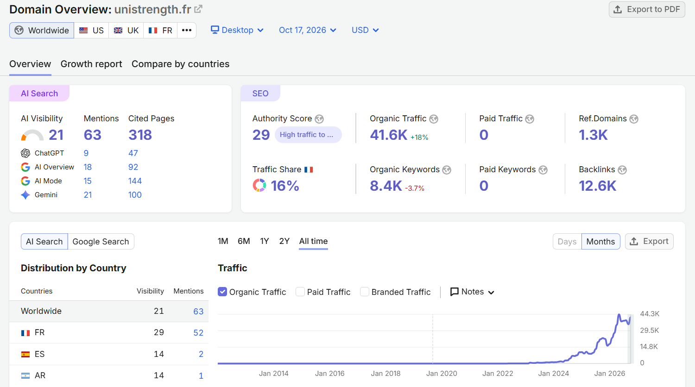

As an e-commerce SEO consultant and PrestaShop specialist, founder of GENISOFT, and official France Num Activator, I partner with e-commerce merchants to identify and eliminate technical bottlenecks restricting their organic visibility on Google.
Each case study presented below adheres to a rigorous methodological framework: deep code-level diagnostic, targeted implementation, objective performance measurement, and transparent disclosure of interpretation boundaries.
1. Detailed Technical Case Studies
📈 Unistrength: Organic Growth for a Multilingual PrestaShop Store
Before 2024, the domain's estimated organic traffic was close to zero.
Ongoing SEO engagement over 24 months, from February 2024 to February 2026, across five workstreams:
- On-page optimization: title tags, meta descriptions and headings of category and product pages.
- Schema.org structured data: JSON-LD markup for product pages (Product, Offer with shipping and return policies, BreadcrumbList, FAQPage) and for the store (Organization, OnlineStore, WebSite).
- Semantic markup: heading hierarchy and HTML structure of the templates, so search engines read the content correctly.
- Semantic cocoon (topic clusters): content organized by theme, with internal linking between the blog (tips, strength training), categories and product pages.
- Link building: acquiring backlinks to strategic pages.
Visibility in AI answer engines: 63 brand mentions and 318 cited pages (ChatGPT, AI Overviews, AI Mode and Gemini).

Interpretation limits: These figures are Semrush estimates (worldwide database, desktop), not the client's Search Console data. They were recorded eight months after the engagement ended: traffic growth started during the engagement and continued afterwards. A domain's trajectory also depends on the client team's own work and on the seasonality of its market.
🛒 Architecture Restructuring & Google Indexing Recovery
Substantial crawl anomalies and de-indexing risks following a catalog restructuring: circular 301 redirection chains, conflicting canonical tags, and crawling budget dispersion caused by faceted navigation filters.
- Comprehensive audit and remediation of 301 redirection rules at the web server level.
- Systematic implementation of noindex meta tags on crawlable low-value filter pages, and robots.txt Disallow directives reserved for infinite parameter combinations (ensuring crawlers do not block noindex detection).
- Alignment of canonical tags pointing consistently to master category and product URLs.
- Generation of a clean, structured XML sitemap submitted to Google Search Console.
Google Search Console health: elimination of priority crawl errors reported in Google Search Console, normalization of server response codes, and restored crawler indexing efficiency.
Interpretation Limits: Crawl frequency and indexation updates depend on Googlebot crawling cycles and market seasonality across specific product lines.
🚀 Core Web Vitals & Page Load Speed Optimization on PrestaShop 8
Excessive mobile load times detected (> 4.5s), degraded Largest Contentful Paint (LCP) in synthetic testing, and page experience warnings in Google Search Console. The audit revealed render-blocking third-party scripts, unoptimized database queries in product listing loops, and missing modern format compression (WebP).
Direct intervention within the child theme and server environment:
- Deferred and asynchronous loading (defer/async) of non-critical third-party scripts.
- Conversion and compression of product visuals to WebP format with responsive <picture> elements.
- Cache configuration and suppression of unoptimized database queries in product templates.
- Elimination of Cumulative Layout Shift (CLS) by systematically setting width and height dimensions on all images and media assets.
Laboratory benchmark (standardized mobile profile): Significant reduction in render-blocking time and accelerated visual display of priority product elements.
Interpretation Limits: The Lighthouse mobile score is a synthetic lab measurement under simulated 4G throttling. It does not replace Real User Monitoring (CrUX / Core Web Vitals) across diverse visitor devices and network connections.
🛡️ Emergency Store Decontamination & Hardening
Emergency store compromise on a weekend via an exploited security vulnerability in a third-party module. Automated hosting suspension and browser warning banners.
- Identification and isolation of the vulnerable third-party module entry point.
- Thorough scan and forensic disinfection of server files and database tables.
- Regeneration of CMS authentication keys (_COOKIE_KEY_), administrative passwords, and database credentials.
- Deployment of WAF rules and .htaccess access restrictions to protect critical admin and API endpoints.
Production restore & containment: store sanitized, secured, and restored to production in under 2 hours (documented client review). Hosting block lifted, access secured, and transaction pipeline reinstated.
Interpretation Limits: Incident remediation removes the active breach; ongoing platform integrity requires continuous security patch management for PrestaShop core and modules.
2. Verified References & Endorsements
My client engagements are backed by transparent and verifiable evaluations on recognized platforms:
- Fiverr: Top Rated seller under profile genisoft0528 with verified client feedback and completed orders.
- France Num Directory: GENISOFT referenced as an official France Num Activator supporting SMEs with digital growth.
- Codeur.com: Verified freelancer profile genisoft-web.
- Malt: Certified freelance profile abdelmonemlefi with verified recommendations and track record on the platform.